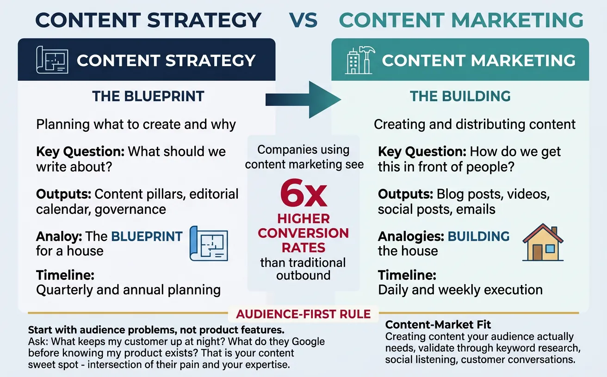
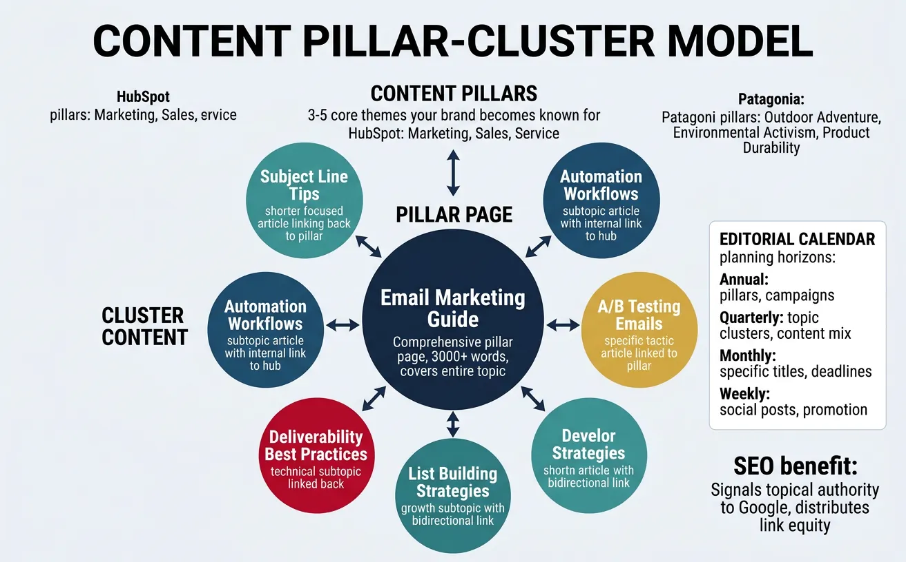
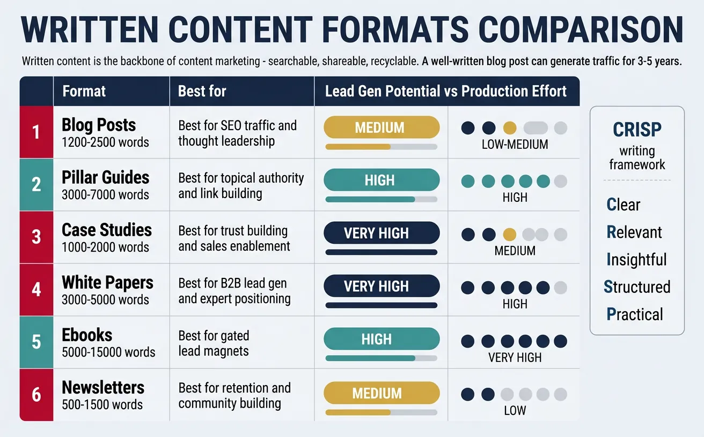
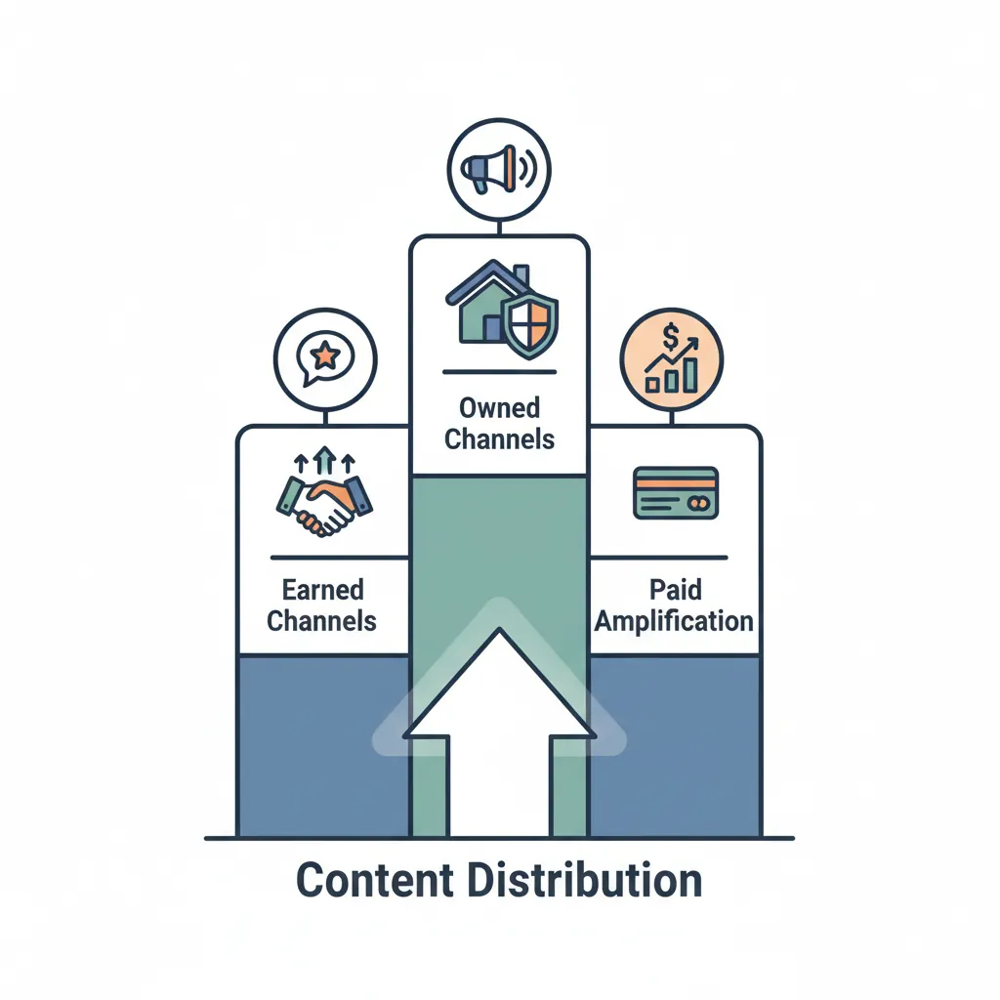
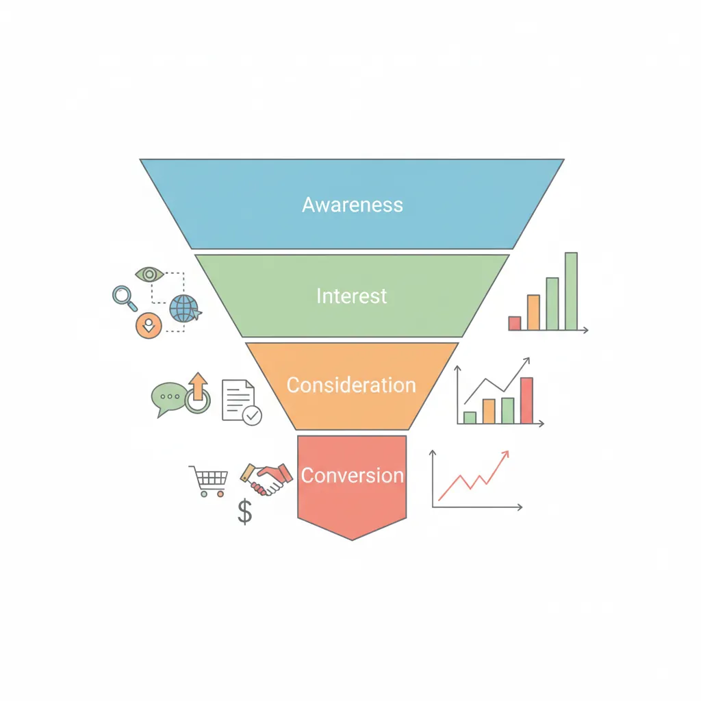

We use cookies to enhance your browsing experience, serve personalized content, and analyze our traffic.
By clicking "Accept All", you consent to our use of cookies. See our
Privacy Policy
for more information.
Marketing & Strategy Series Part 5: Content Marketing Mastery
February 12, 2026Wasil Zafar24 min read
Master content strategy frameworks, editorial systems, multi-format content creation, distribution channels, and ROI measurement for content-driven growth.
Part 5 of 21: Building on SEO foundations from Part 4, this article explores content marketing—creating valuable content that attracts, engages, and converts your target audience while supporting your search and brand strategies.
Content marketing is the art of building an audience by consistently delivering valuable information before asking for anything in return. Think of it like a great teacher: they educate, inspire, and build trust — and when they recommend something, people listen because they've earned credibility.
Unlike advertising, which interrupts, content marketing attracts. It's the difference between a billboard on a highway and a friend recommending a book. Companies using content marketing see 6x higher conversion rates than those using traditional outbound methods, and the content continues generating leads for years after publication.

Content Strategy provides the blueprint while Content Marketing builds the house — planning comes before production
Content Strategy vs. Content Marketing
Aspect
Content Strategy
Content Marketing
Focus
Planning what to create and why
Creating and distributing content
Question
"What should we write about?"
"How do we get this in front of people?"
Output
Content pillars, editorial calendar, governance
Blog posts, videos, social posts, emails
Analogy
The blueprint for a house
Building the house
Timeline
Quarterly/annual planning
Daily/weekly execution
The Content-Market Fit Concept
Just as Product-Market Fit means building what customers want, Content-Market Fit means creating content your audience actually needs. The most common content marketing failure isn't poor writing — it's writing about topics nobody cares about. Before creating anything, validate demand through keyword research, social listening, and customer conversations.
The Audience-First Rule: Start with your audience's problems, not your product features. Ask: "What keeps my customer up at night?" and "What question do they Google before they even know my product exists?" That's your content sweet spot — the intersection of their pain and your expertise.
Content Pillars & Clusters
Content pillars are the 3-5 core themes your brand becomes known for. Think of them as "subjects you major in." HubSpot's pillars are marketing, sales, and customer service. Patagonia's are outdoor adventure, environmental activism, and product durability. Every piece of content should connect to a pillar.

The Pillar-Cluster model organizes content around core themes with supporting articles that link back to the pillar page
The Pillar-Cluster Model
SEO + Content Strategy
Create pillar pages (comprehensive 3,000+ word guides) for each core topic, then surround them with cluster content (shorter articles covering subtopics). Each cluster links to the pillar and vice versa. This structure signals topical authority to Google and creates an internal linking web. For example: Pillar = "Email Marketing Guide" → Clusters = "Subject Line Tips," "Automation Workflows," "A/B Testing Emails," "Deliverability Best Practices."
Editorial Calendar & Planning
An editorial calendar transforms random content creation into a predictable, strategic system. Without one, teams produce content reactively — responding to requests instead of executing a plan. Think of it as a meal plan: without one, you eat whatever's convenient. With one, every meal serves your nutrition goals.
Planning Horizon
What to Plan
Flexibility Level
Annual
Pillars, major campaigns, seasonal themes
Directional — revisit quarterly
Quarterly
Topic clusters, content mix, distribution plan
Moderate — adjust based on performance
Monthly
Specific titles, authors, deadlines, formats
Flexible — swap based on priorities
Weekly
Social posts, email sends, promotion schedule
Very flexible — respond to trends
The 70/20/10 Content Mix:70% proven content types (blog posts, how-tos) that reliably perform → 20% innovative content (new formats, interactive tools) to find the next winner → 10% experimental (emerging platforms, bold creative) that might fail but could unlock breakthroughs. This mix balances reliability with innovation.
Content Creation
Written Content
Written content remains the backbone of content marketing because it's searchable, shareable, recyclable, and the most scalable format. A well-written blog post can generate traffic for 3-5 years. Here are the high-impact written formats ranked by lead generation potential:

High-impact written content formats ranked by their ability to generate leads and the effort required to produce them
Format
Length
Best For
Lead Gen Potential
Production Effort
Blog Posts
1,200-2,500 words
SEO traffic, thought leadership
Medium
Low-Medium
Pillar Guides
3,000-7,000 words
Topical authority, link building
High
High
Case Studies
1,000-2,000 words
Trust building, sales enablement
Very High
Medium
White Papers
3,000-5,000 words
B2B lead gen, expert positioning
Very High
High
Ebooks
5,000-15,000 words
Gated lead magnets
High
Very High
Newsletters
500-1,500 words
Retention, community building
Medium
Low
Case Study: HubSpot's Content Empire
Content Marketing Pioneer
HubSpot generates over 7 million monthly blog visits across 13,000+ articles. Their strategy: create the definitive answer for every question a marketer might Google. They didn't just blog — they built a content moat. Key tactics: (1) Competitive keyword targeting with 10x content, (2) Historical optimization — updating old posts to maintain rankings, (3) Topic clusters with pillar-cluster linking, (4) Free tools as link magnets (Website Grader). The result: content becomes their primary customer acquisition channel, outperforming paid ads at 1/5th the cost per lead.
The Writing Quality Framework: CRISP
Great marketing content follows the CRISP framework:
Clear: One idea per paragraph. If a sentence needs re-reading, rewrite it
Relevant: Every section must earn its place. Ask "does the reader need this?"
Insightful: Offer perspectives they can't get elsewhere. Data, experience, unique takes
Structured: Scannable with headings, bullets, bold text, and tables
Practical: End with actionable next steps. Readers should know what to do after reading
Video & Podcasting
Video is the fastest-growing content format. Cisco projects that video will account for 82% of all internet traffic. But video marketing isn't just YouTube — it spans tutorials, testimonials, social clips, webinars, and live streams.
Video Type
Platform
Length
Goal
Educational tutorials
YouTube, website
8-20 min
SEO, authority building
Short-form social
TikTok, Reels, Shorts
15-90 sec
Awareness, virality
Webinars
Zoom, proprietary
30-60 min
Lead generation, nurturing
Customer testimonials
Website, social
1-3 min
Trust, conversion
Product demos
Website, YouTube
3-10 min
Consideration, sales
Podcasts
Spotify, Apple, YouTube
20-60 min
Thought leadership, community
The Podcast Advantage: Podcasts create an intimacy no other format matches — listeners hear your voice in their ears weekly, sometimes for hours. Average podcast listener consumes 7+ episodes per week, creating a deeply engaged audience. For B2B companies, launching a podcast where you interview potential clients is a genius "relationship-first" sales strategy disguised as content.
Visual Content
Human brains process visuals 60,000x faster than text. Visual content earns 94% more views and 30% more shares than text-only posts. The key formats:
Infographics: Condense complex data into visual stories. The most-shared content format — generating 3x more shares than any other type
Data Visualizations: Charts, graphs, and interactive dashboards that make numbers tell a story
Interactive Content: Quizzes, calculators, assessments, and configurators that engage users actively (interactive content converts 2x better than passive content)
Templates & Checklists: Practical tools users download and use — excellent for lead generation
Distribution & Amplification
Owned Channels
Owned channels are platforms you control completely. They're your digital real estate — unlike social media (rented land), nobody can change the algorithm on your website or email list. Owned channels should be the foundation of distribution.

The three pillars of content distribution: owned channels you control, earned channels from third-party endorsement, and paid amplification
Channel
Reach
Control Level
Conversion Strength
Building Effort
Website/Blog
Unlimited (via SEO)
Full control
High (with CTAs)
Medium
Email List
Subscriber base
Full control
Highest (4,200% ROI)
Low-Medium
Newsletter
Subscriber base
Full control
High (relationship)
Medium
Community/Forum
Member base
High control
Very High (trust)
High
Mobile App
Install base
Full control
Very High (engagement)
Very High
The "Own Your Audience" Principle: Every follower on Instagram, subscriber on YouTube, or connection on LinkedIn sits on rented land. The platform can (and will) change the rules. Algorithm changes have devastated businesses overnight. Build your audience on owned channels (email, website, community) and use social media to drive traffic home, not as a primary platform.
Earned & Shared Channels
Earned distribution happens when others share your content voluntarily. It's the most credible form of distribution because a third party endorses your content — like word of mouth at scale.
Newsworthy announcements, original research, expert commentary
Medium
Very High
Guest Contributions
Write for industry publications, podcasts, webinars
Medium
High
Content Syndication
Republish on Medium, LinkedIn Articles, industry aggregators
High
Medium
Community Distribution
Share in Slack groups, Discord, Reddit, Quora
Medium
High
Content Repurposing
The biggest content marketing waste: creating once and publishing once. Every piece of content should be repurposed into multiple formats across multiple channels. Think of repurposing not as recycling but as translating content into the native language of each platform.
The Content Atomization Framework
Maximum Content ROI
Start with one "Big Rock" content piece (a webinar, pillar post, or research report). Then atomize it into 20+ derivative pieces:
1 pillar blog post → 5 shorter blog posts on subtopics
Pillar post → Slide deck → SlideShare upload
Key sections → 10 social media posts (text, carousel, infographic)
Interview quotes → 5 short video clips
Statistics → 3 infographics
Full webinar → Podcast episode → YouTube video
Entire piece → Email series (5-7 emails)
Core insights → Twitter/X thread, LinkedIn post
One hour of Big Rock production can generate a full month of content across all channels.
Measurement & Optimization
Content Metrics
Measuring content effectiveness requires tracking metrics at each stage of the funnel. Vanity metrics (page views alone) don't tell you if content drives business results. The key is connecting content activity to revenue outcomes.

Measuring content effectiveness requires tracking different metrics at each stage of the marketing funnel
Stage
Metric Category
Key Metrics
Tools
Awareness
Consumption
Page views, unique visitors, impressions, video views
GA4, Search Console
Engagement
Interaction
Time on page, scroll depth, shares, comments, bounce rate
Hotjar, GA4
Consideration
Lead generation
Email signups, downloads, form fills, free trial starts
HubSpot, Marketo
Conversion
Revenue
SQLs from content, influenced revenue, content-assisted conversions
CRM, attribution tools
Retention
Loyalty
Return visitors, newsletter open rate, community engagement
Email platform, analytics
Content ROI
Content ROI is the hardest marketing metric to measure — and the one leadership cares about most. The challenge: content influences purchases across multiple touchpoints over weeks or months. A blog post read in January may contribute to a deal closed in March.
Content ROI Formula
Content ROI = (Revenue Attributed to Content − Content Investment) ÷ Content Investment × 100%
Example: If content generates $500K in attributed revenue and costs $100K to produce → ROI = ($500K − $100K) / $100K × 100% = 400% ROI. Include all costs: writers, tools, design, distribution, management time.
Attribution Approaches
Model
How It Works
Best For
Limitation
First-Touch
Credits the first content piece
Awareness measurement
Ignores nurturing content
Last-Touch
Credits the final content before conversion
Bottom-funnel ROI
Ignores discovery content
Multi-Touch
Distributes credit across all touchpoints
Full-funnel view
Complex to implement
Content Scoring
Assigns points based on content engagement
Lead prioritization
Requires calibration
Content Operations
Content ops is the system that makes content production repeatable and scalable. It's the difference between an artisan bakery (one person making everything) and a professional kitchen (specialized roles, standardized processes, quality control).
Team Size
Roles
Monthly Output
Scaling Approach
Solo (1)
Content creator/strategist
4-8 pieces
Templates, AI assistants, repurposing
Small (2-4)
Strategist, writers, designer
12-20 pieces
Editorial calendar, documented workflows
Medium (5-10)
+ Editor, SEO, social, video
30-50 pieces
Content management system, style guides
Enterprise (10+)
+ Analytics, ops, regional leads
80-200+ pieces
DAM, governance, localization workflows
The Content Workflow: From Idea to Publish
Production Process
A professional content workflow has 7 stages with clear owners and quality gates:
Ideation: Brainstorm topics from keyword research, customer questions, competitor gaps
Briefing: Create a detailed content brief with target keyword, outline, audience, CTA
Drafting: Write first draft following the brief and style guide
Editing: Review for accuracy, readability, SEO, brand voice
Design: Add visuals, graphics, formatting
Publishing: Upload, optimize metadata, schedule distribution
Promotion: Distribute across channels, monitor performance
Content Strategy Canvas
Content Strategy Canvas
Plan your content marketing strategy including pillars, formats, distribution, and success metrics. Download as Word, Excel, PDF, or PowerPoint.
Draft auto-saved
All data stays in your browser. Nothing is sent to or stored on any server.
Practice Exercises
Exercise 1: Content Audit
60 minutes
List every piece of content you've published in the last 6 months. For each, record: format, topic pillar, traffic, engagement (shares/comments), and conversions generated. Categorize each as "Keep" (still performing), "Update" (outdated but valuable topic), or "Remove" (thin, off-brand, or redundant). This audit reveals what's working, what's wasting space, and where to invest next.
Exercise 2: Content Atomization Sprint
45 minutes
Take your single best-performing blog post or article. Plan how to atomize it into at least 15 derivative pieces across 5+ channels. Map each derivative to a specific platform and format: social posts, email sequences, infographic, video script, podcast talking points, slide deck, tweet thread. Calculate: if original production took 8 hours, how many content-hours does atomization generate?
Exercise 3: Editorial Calendar Build
90 minutes
Using the Content Strategy Canvas above, build a 30-day editorial calendar. For each week, plan: 1 pillar or cluster piece, 3-5 social posts derived from it, 1 email newsletter, and any seasonal or trending content. Assign realistic deadlines, note required resources, and identify which content can be batched (written on the same day). The goal is a complete, executable content plan.
Key Takeaways
8 Essential Content Marketing Principles:
Audience first, product second — Solve their problems before selling your solution
Content pillars create authority — Own 3-5 topics deeply rather than covering everything shallowly
Create once, distribute everywhere — Atomize every big piece into 15-20 derivatives across channels
Own your audience — Build email lists and communities; social platforms are rented land
70/20/10 content mix — Balance proven formats with innovation and experimentation
Case studies convert — Real stories with real results are the most persuasive content format
Measure at every stage — Track awareness, engagement, leads, and revenue from content
Content compounds — A blog post written today can generate traffic for 3-5 years if maintained
Continue the Series
Part 4: SEO & Search Marketing
Master technical SEO, on-page optimization, link building, and AI search strategies.